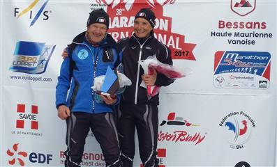
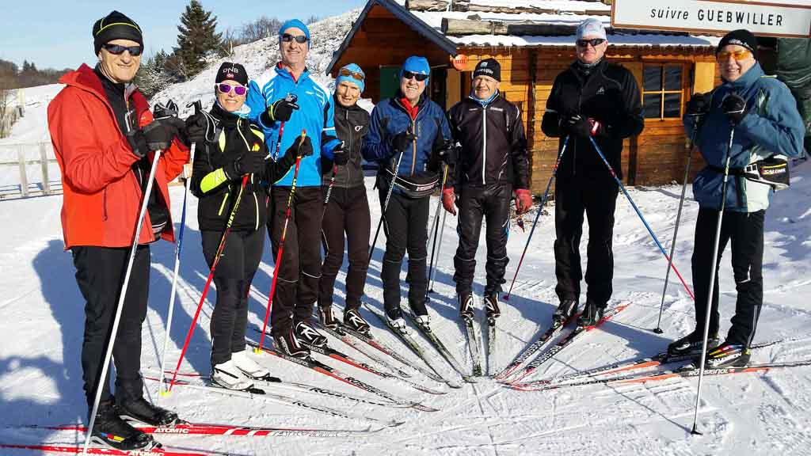
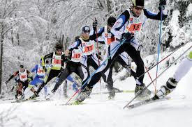

Ski de fond :

Ski de fond compétition :
Pour la saison d'hiver, nous vous proposons une activité SKI DE FOND ADULTE (loisir) encadrée par des moniteurs fédéraux diplômés.
La licence carte neige sera obligatoire pour tous les pratiquants. Les séances commenceront par l’apprentissage de la technique du skating.
Le skating n’aura plus de secret pour vous, vous maîtriserez parfaitement la glisse, vous n’aurez plus peur des virages et vous pourrez apprécier même les descentes.

Ski de fond Loisir :
Notre club vous propose des sorties ski de fond classique pour les enfants et adultes à raison d'une fois par semaine au Markstein.
Nous vous proposons également une initiation à la pratique du skating.
Pout tous renseignements, s'adresser à :
Raymond PEQUIGNOT06 06 40 23 92
raymond.pequignot@gmail.com

Organisation de compétition de ski de fond :
Les membres de notre club sont très engagés dans l'organisation de compétion de ski de fond.
Que ce soit pour le chronométrage, ou l'intendance notre club est aguéri.
Nous organisons entre autre "la nordique des crêtes", compétion de premier plan.